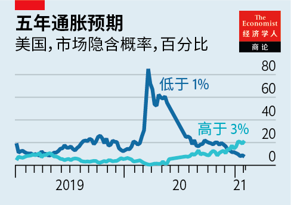
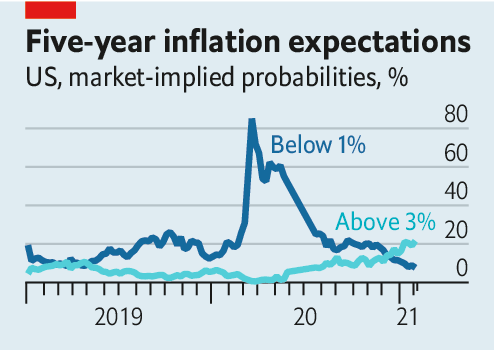

2021-02-28T13:48:13+00:00
世界经济
膨胀门
【首文】更高的通胀会如何扰乱全球经济政策
关于疫情是否会引发高通胀的争论越来越紧迫了。1月，欧元区基础价格以五年来最快的速度上涨。在美国，一些经济学家担心，一旦疫苗允许服务业完全重启，拜登总统计划的1.9万亿美元刺激措施（其中包括为大多数美国人发放1400美元支票）可能会使经济过热。新出现的瓶颈预示着商品价格的上涨。集装箱船上的舱位费比一年前上涨了180%，而今年对技术设备的需求激增导致半导体短缺，影响了汽车、计算机和智能手机的生产。
有关物价上涨的总体数据很快就会使人感到通胀已经抬头。由于相比于一年前，疫情初期大宗商品价格暴跌的状况已渐渐消退，而最近石油价格上涨的影响开始显现——2月8日布伦特原油价格一年多来首次突破每桶60美元——物价会自动开始上涨。德国暂时降低增值税率的措施到期，已经帮助通胀率在一个月内从同比-0.7%上升到1.6%。
如果以各国央行的目标来衡量，在过去十年中的大部分时间里，世界经济的问题一直是通胀过低，而不是过高。因此，即将到来的价格上涨很容易视为可喜的现象。实际上，有几个原因令它值得担心。
其一是这让那些主张在有需要的地方施加更多财政刺激的人更为被动。例如，欧元区维持更高通胀的可能性很小。疫情期间其主要利率并未降低，而考虑到它的经济前景和缺乏货币手段，赤字支出仍然不足。就像2011年欧洲央行错误地因短期通胀突增而加息一样，这次的危险是价格的暂时上涨会鼓舞那些对经济萧条的风险满不在乎的财政鹰派。日本作为低通胀经济的典型也面临着同样的危险，物价在疫情期间开始下跌。日本今年可能会摆脱通货紧缩，但除此之外，由于它似乎已经放弃了2010年代中期摆脱通货紧缩的短暂尝试，看起来注定要留在低通胀陷阱中。
更高的通胀也可能导致美国货币政策动荡——不断上升的通胀预期和经济更快反弹意味着价格上涨更有可能持续下去。金融市场的现状暗示着未来五年，消费者价格有五分之一的机会平均每年至少增长3%。美联储已承诺保持低利率并继续购买债券，因为它希望通货膨胀率突破其2%的目标来弥补今天的缺口。但是，其新的“平均通胀目标”制度不允许持久或大幅度的超出。最终，美联储会将希望提高利率来使通胀率回落。
今年价格上涨得越快，货币紧缩就可能到来得越早。美联储副主席理查德·克拉里达（Richard Clarida）已经表示，央行将仅弥补上一年出现的通胀缺口，这意味着补齐通胀所需的时间可能会短得出人意料。2月7日，美国财政部长珍妮特·耶伦（Janet Yellen）试图安抚拜登刺激计划的批评者，说美国拥有应对通胀的工具。但加息并非没有后果，如果美联储给过热的经济泼冷水，再次陷入衰退的风险就会增加。
加息也会对市场产生深远的影响。当下金融局面中的一切几乎都以央行长期保持低利率为前提。廉价资金支撑着政府可以随心所欲地花钱的想法（包括如拜登计划中的基础设施法案），也支撑着当下高企的股价和充沛的信贷。利率前景的突然变化将是痛苦的，就像在2013年美联储的强硬言论导致众所周知的“缩减恐慌”一样。
加息对华尔街来说会是一场冲击，而对新兴市场则是痛苦的折磨。许多国家效仿富裕国家，尝试非常规的货币政策和更大的预算赤字。但这样的做法是假定全球金融状况将保持宽松。美国用加息来抑制通胀意味着美元走强和新兴经济体的资本外流，就像2013年那样。这将危及这些国家的财政，使其更难对抗疫情的影响。摆脱过去十年低通胀、低利率范式的想法有很多可取之处。但更高的通胀将使世界经济和金融市场前路崎岖。■
2021-02-28T13:48:13+00:00
The world economy
Inflategate
How higher inflation could disrupt global economic policy
THE DEBATE about whether high inflation will emerge out of the pandemic is becoming more pressing. In January underlying prices in the euro zone rose at their fastest pace for five years. In America some economists fear that President Joe Biden’s planned $1.9trn stimulus, which includes $1,400 cheques for most Americans, may overheat the economy once vaccines allow service industries to reopen fully. Emerging bottlenecks threaten to raise the price of goods. Space on container ships costs 180% more than a year ago and a shortage of semiconductors caused by this year’s boom in demand for tech equipment is disrupting the production of cars, computers and smartphones.
Headline statistics on price rises will soon contribute to the sense that an inflationary dawn is breaking. They will go up automatically as the collapse in commodities prices early in the pandemic falls out of comparisons with a year earlier, and the recent rise in the oil price begins to bite—on February 8th Brent crude rose above $60 a barrel for the first time in more than a year. In Germany the reversal of a temporary cut in VAT has already helped year-on-year inflation rise from -0.7% to 1.6% in a month.
For most of the past decade the world economy’s problem, judged by central banks’ targets, has been too little inflation, not too much. As a result it is easy to view the coming acceleration in prices as welcome. In fact, it is worth worrying about, for several reasons.
One is that it weakens the hand of those arguing for more fiscal stimulus in places that need it. There is little prospect of the euro zone sustaining higher inflation, for example. Its main rate of interest has not been cut during the pandemic and its deficit spending remains inadequate given its economic outlook and lack of monetary firepower. Much as the European Central Bank mistakenly raised rates in response to a temporary burst of inflation in 2011, the danger this time is that a temporary acceleration in prices emboldens fiscal hawks who are complacent about the dangers of a depressed economy. The same danger lurks in Japan, the archetypal low-inflation economy. Its prices started falling during the pandemic. Japan will probably escape deflation this year, but beyond that it looks destined to remain in a low-inflation trap, having seemingly given up on its brief attempt to spring out of it in the mid-2010s.
Higher inflation could also cause gyrations in monetary policy in America, where rising inflation expectations and a faster rebound mean price rises are more likely to prove persistent. Financial markets imply a one-in-five chance that consumer prices will grow by at least 3% per year on average over the next five years. The Federal Reserve has promised to keep interest rates low and to keep buying bonds because it wants inflation to overshoot its 2% target, in order to make up for today’s shortfalls. But its new “average inflation targeting” regime does not allow for an enduring or large overshoot. Eventually the central bank will want to raise interest rates to bring inflation back down.
The faster prices rise this year, the sooner that tightening could come. Richard Clarida, the Fed’s vice-chairman, has said that the central bank will make up only for inflation shortfalls that have occurred over the preceding year, meaning the point at which catch-up is complete could come surprisingly quickly. On February 7th Janet Yellen, the Treasury secretary, tried to reassure critics of Mr Biden’s stimulus by saying that America has the tools to deal with inflation. But higher rates are not without consequence, and if the Fed finds itself pouring cold water on an overheating economy, the risks of another recession will rise.
Higher rates also hold deep implications for markets. Almost everything about today’s financial landscape is premised on central banks keeping interest rates low for a long time. Cheap money lies behind the idea that the government can spend however much it likes—including, say, on Mr Biden’s planned infrastructure bill—and underpins today’s sky-high stockmarket values and abundant credit. An abrupt change in the interest-rate outlook would be painful, as it was in 2013 when the Fed’s hawkish comments led to what became known as the “taper tantrum”.
On Wall Street higher rates would be a shock. In emerging markets they would be agonising. Many have been experimenting with unconventional monetary policy and bigger budget deficits, following the rich world. But their efforts assume that global financial conditions will stay loose. Higher interest rates in America to see off inflation would mean a stronger dollar and capital outflows from emerging economies, as in 2013. This would imperil their finances and make it harder for them to fight the effects of the pandemic. There is a lot to like about the idea of escaping the low-inflation, low-rate paradigm of the past decade. But higher inflation will expose the world economy and financial markets to a bumpy ride. ■
2021-02-28T13:48:13+00:00
世界經濟
膨脹門
【首文】更高的通脹會如何擾亂全球經濟政策
關於疫情是否會引發高通脹的爭論越來越緊迫了。1月，歐元區基礎價格以五年來最快的速度上漲。在美國，一些經濟學家擔心，一旦疫苗允許服務業完全重啟，拜登總統計劃的1.9萬億美元刺激措施（其中包括為大多數美國人發放1400美元支票）可能會使經濟過熱。新出現的瓶頸預示着商品價格的上漲。集裝箱船上的艙位費比一年前上漲了180%，而今年對技術設備的需求激增導致半導體短缺，影響了汽車、計算機和智能手機的生產。
有關物價上漲的總體數據很快就會使人感到通脹已經抬頭。由於相比於一年前，疫情初期大宗商品價格暴跌的狀況已漸漸消退，而最近石油價格上漲的影響開始顯現——2月8日布倫特原油價格一年多來首次突破每桶60美元——物價會自動開始上漲。德國暫時降低增值稅率的措施到期，已經幫助通脹率在一個月內從同比-0.7%上升到1.6%。
如果以各國央行的目標來衡量，在過去十年中的大部分時間裡，世界經濟的問題一直是通脹過低，而不是過高。因此，即將到來的價格上漲很容易視為可喜的現象。實際上，有幾個原因令它值得擔心。
其一是這讓那些主張在有需要的地方施加更多財政刺激的人更為被動。例如，歐元區維持更高通脹的可能性很小。疫情期間其主要利率並未降低，而考慮到它的經濟前景和缺乏貨幣手段，赤字支出仍然不足。就像2011年歐洲央行錯誤地因短期通脹突增而加息一樣，這次的危險是價格的暫時上漲會鼓舞那些對經濟蕭條的風險滿不在乎的財政鷹派。日本作為低通脹經濟的典型也面臨著同樣的危險，物價在疫情期間開始下跌。日本今年可能會擺脫通貨緊縮，但除此之外，由於它似乎已經放棄了2010年代中期擺脫通貨緊縮的短暫嘗試，看起來註定要留在低通脹陷阱中。
更高的通脹也可能導致美國貨幣政策動蕩——不斷上升的通脹預期和經濟更快反彈意味着價格上漲更有可能持續下去。金融市場的現狀暗示着未來五年，消費者價格有五分之一的機會平均每年至少增長3%。美聯儲已承諾保持低利率並繼續購買債券，因為它希望通貨膨脹率突破其2%的目標來彌補今天的缺口。但是，其新的“平均通脹目標”制度不允許持久或大幅度的超出。最終，美聯儲會將希望提高利率來使通脹率回落。
今年價格上漲得越快，貨幣緊縮就可能到來得越早。美聯儲副主席理查德·克拉里達（Richard Clarida）已經表示，央行將僅彌補上一年出現的通脹缺口，這意味着補齊通脹所需的時間可能會短得出人意料。2月7日，美國財政部長珍妮特·耶倫（Janet Yellen）試圖安撫拜登刺激計劃的批評者，說美國擁有應對通脹的工具。但加息並非沒有後果，如果美聯儲給過熱的經濟潑冷水，再次陷入衰退的風險就會增加。
加息也會對市場產生深遠的影響。當下金融局面中的一切幾乎都以央行長期保持低利率為前提。廉價資金支撐着政府可以隨心所欲地花錢的想法（包括如拜登計劃中的基礎設施法案），也支撐着當下高企的股價和充沛的信貸。利率前景的突然變化將是痛苦的，就像在2013年美聯儲的強硬言論導致眾所周知的“縮減恐慌”一樣。
加息對華爾街來說會是一場衝擊，而對新興市場則是痛苦的折磨。許多國家效仿富裕國家，嘗試非常規的貨幣政策和更大的預算赤字。但這樣的做法是假定全球金融狀況將保持寬鬆。美國用加息來抑制通脹意味着美元走強和新興經濟體的資本外流，就像2013年那樣。這將危及這些國家的財政，使其更難對抗疫情的影響。擺脫過去十年低通脹、低利率範式的想法有很多可取之處。但更高的通脹將使世界經濟和金融市場前路崎嶇。■